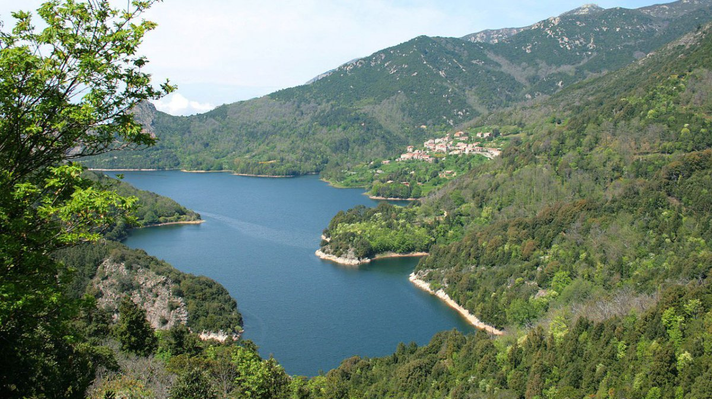
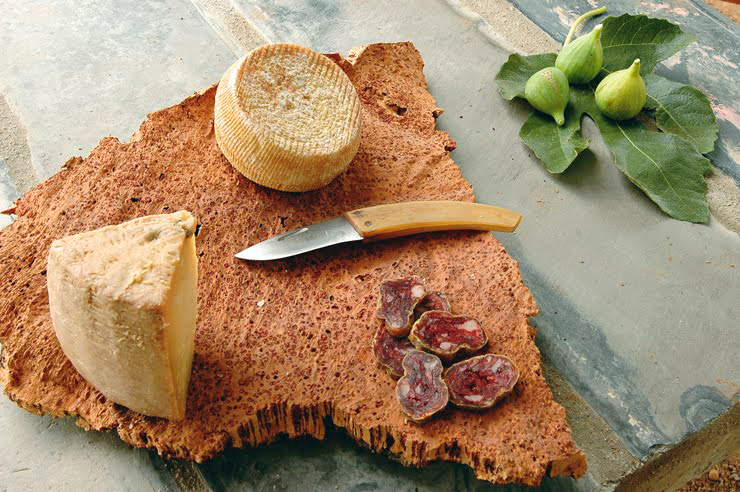
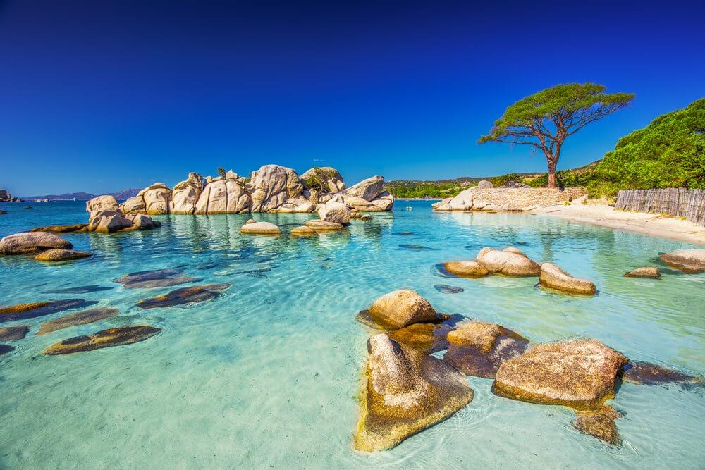
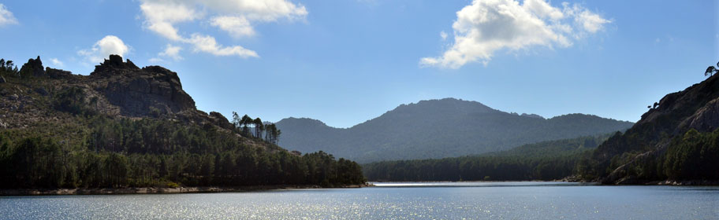
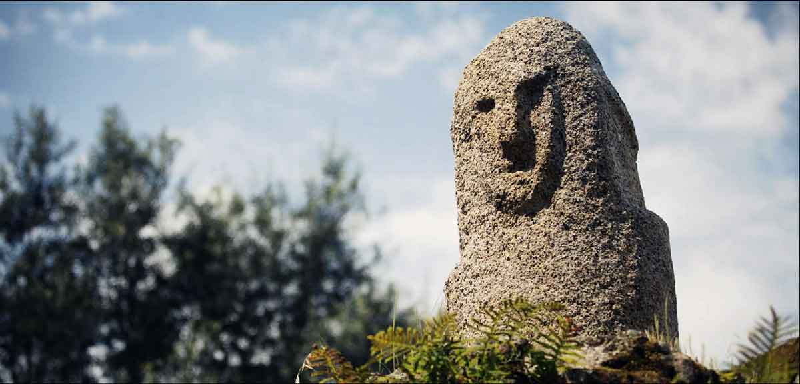
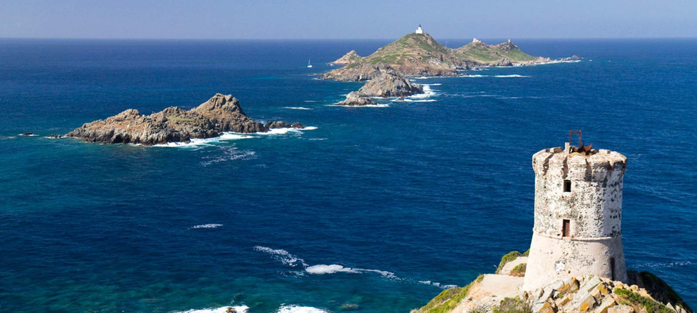
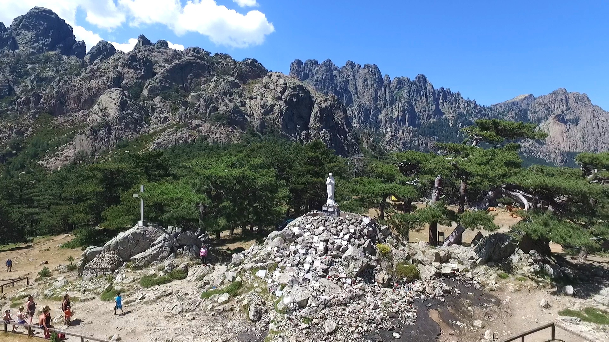
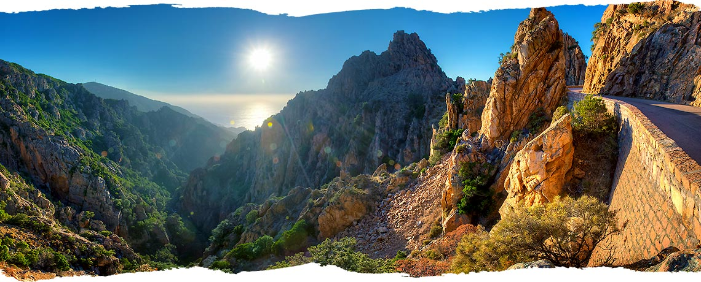
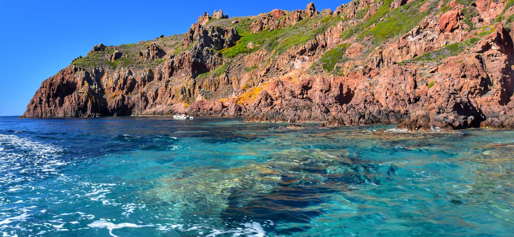
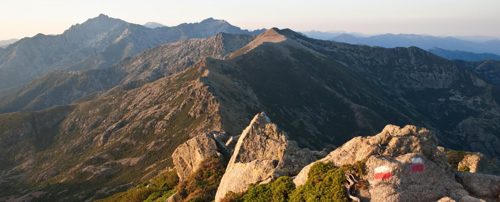

La Corse est sans doute la seule île méditerranéenne à ne pas avoir sacrifié son patrimoine naturel sur l'autel de
l'industrie touristique. Doté d'une nature très bien préservée, de paysages variés extraordinaires et d'un climat clément,
la Corse est le terrain idéal pour tous les amoureux de la nature qu'ils soient simples promeneurs ou sportifs. Le dépaysement
est absolu dès lors que l'on quitte la côte pour s'aventurer dans la montagne Corse avec ses 120 sommets à plus de 2000 mètres
et des cimes encore enneigés à l'horizon quand le soleil cogne déjà sur la plage. Cette nature exceptionnelle est très bien
préservée grâce au parc naturel régional de Corse qui englobe notamment la réserve naturelle de Scandola (nord du golf de Porto),
façade maritime classée au Patrimoine mondial de l'humanité par l'Unesco. Outre le célèbre GR 20 réservé aux randonneurs les plus
aguerris, la Corse offre de multiple activités possibles : VTT, équitation, escalade, kayak, canyoning.

La Culture

La Corse est une île à l'identité forte et originale occupant une place à part dans le bassin méditerranéen. Elle est un savant
mélange de nature et de culture mêlant langue, histoire et gastronomie. Le patrimoine architectural est immense et préservé.
Bonifacio, Ajaccio, Bastia, Corte, Calvi sont les villes d'histoire les plus connues mais nombreux sont les villages de pierre
classés qui méritent également le détour, beaucoup ayant fait l'objet d'une rénovation.
Les plages
Le sud de l'île bénéficie de magnifiques plages de sable fin doré dont la couleur des eaux à certaines périodes
de l'année n'ont rien à envier à celles des caraïbes ou de l'océan indien : Palombaggia, Santa Giulia, Piantarella
sont les plus connues. En dehors des plages du sud mythiques mais envahies l'été par les hordes de touristes, la
Corse dispose sur la côte occidentale de jolies plages et criques moins connues mais peu fréquentées qui se nichent
dans le golfe du Valinco, côté ouest de l'île. La faiblesse des fonds plaît aux familles et rend la baignade sécurisante
pour les enfants. Les activités nautiques sont diverses : ski nautique, planche à voile, kayak... Il est important de
préciser que les hôtels les pieds dans l'eau restent rares et n'ont pas tous une plage attitrée.

6 lieux à visiter
1 - L'Ospedale

L'Ospedale est un village situé sur la commune de Porto-Vecchio, en Corse-du-Sud. Il est situé dans la microrégion du Freto,
qui occupe l'extrémité méridionale de l'île. C'est le plus haut village de Corse-du-Sud, devançant Serra-di-Scopamène et Renno.
La magnifique forêt de pins qui s'élève sur son territoire est un lieu de balades connu des visiteurs qui souhaitent découvrir une faune et une flore intactes.
Un peu au-dessus du village se trouve un barrage haut de 25 mètres construit suivant la technique des levées de terre. Ce dernier retient un volume d’eau de
3 000 000 m3 et forme un petit lac. À 4 km après le barrage sur la route menant à Zonza, un sentier balisé permet d'accéder à la cascade de Piscia di Gallu.
Avec une chute d'eau de 60 mètres, c'est la cascade la plus vertigineuse de Corse.
2 - Filitosa

Filitosa est un site préhistorique situé en Corse. Il fut occupé depuis le néolithique jusqu'à l'Antiquité par les premiers Corses. Il est principalement représentatif
de l'âge du bronze de l'île-de-beauté. Ce site est reconnu dans toute la Corse ainsi qu'au niveau international pour sa spectaculaire concentration en statues de granit,
menhirs et de faunes constituant une grande richesse culturelle à valeur historique .
En 2017, l'olivier millénaire présent sur le site (1 200 ans aujourd'hui), est entouré des 5 statues de granit (les menhirs) et a été classé Arbre Remarquable de France.
De plus, le site préhistorique de Filitosa a été classé Monument Historique par les arrêtés du 4 décembre 1967 et du 10 décembre 19801.
3 - Les îles Sanguinaires

À 12 km d’Ajaccio, l’archipel des îles Sanguinaires est un groupe mythique de quatre îles de roche de porphyre rouge, situé à l’extrémité de la
magnifique Pointe de la Parata. L’archipel des îles Sanguinaires est un paradis pour les oiseaux de mer et les dauphins, situé à proximité d’Ajaccio.
En été, des excursions en bateau sont organisées à partir du port de Tino Rossi à Ajaccio. De nombreux ouvrages et
guides de voyage témoignent de la beauté et de la majesté de ces îles. Alphonse Daudet écrivait dans ses lettres : « Imaginez une île sauvage et
rouge sang avec un phare à une extrémité et une vieille tour génoise à l’autre… Un autre bel endroit que j’ai trouvé pour rêver et être seul. »
4 - Les aiguilles de Bavella

Les aiguilles de Bavella (I Forchi di Bavedda en corse) dominent le col du même nom à 1 218 m, reliant l'Alta Rocca à la côte est de la Corse. Le massif
est moins élevé et pourtant bien plus fréquenté que celui des aiguilles de Popolasca. Le site se caractérise par des pics déchiquetés, de grandes murailles
rocheuses et des pins tordus par le vent.
Au col, à quelques mètres de la route, sur le vaste terre-plein, se dresse au sommet d'un amas de pierres la statue de Notre-Dame-des-Neiges.
5 - Les calanques de Piana/Calanche di Piana

Les calanche sont une formation géologique de roches plutoniques faisant partie de l'ensemble appelé « Corse cristalline » à roches magmatiques,
à l'ouest de la ligne partant de Calvi et rejoignant Solenzara.
Les calanche se présentent sous la forme d'un petit chaînon montagneux en forme de « V » pointé vers la droite aux Roches Bleues, qui démarre au nord au-dessus de l'anse
de Dardo situé sur la rive sud du golfe de Porto et se termine au sud au pont de Cavallaghiu.
Le culmen s'établit à 698 m. Au milieu se trouve un rocher, dominé par Capu Ghineparu (515 m).
6 - Réserve naturelle de Scandola

La Réserve naturelle de Scandola (RNC24) est une réserve naturelle en Corse à la fois marine et terrestre, également inscrite sur la liste du patrimoine
mondial de l'Unesco, et faisant partie des aires marines protégées de la France. Classée en 1975, elle occupe une surface de 1 669 hectares et protège une
biodiversité remarquable entre l’étage médiolittoral et l'étage circalittoral de sa partie sous-marine. Elle a été jugée représentative des écosystèmes et
biocénoses de la façade maritime du Parc naturel régional de Corse qui en est le gestionnaire.
7 - Bonus : Le GR20

Le sentier de grande randonnée 20 (GR 20) traverse la Corse du nord au sud en passant par la chaîne de montagnes, dans le Parc naturel régional de Corse.
Le GR 20 est souvent qualifié de « chemin le plus difficile d’Europe ». Long de 179 km6,7 et cumulant un dénivelé positif d'environ 11 000 mètres verticaux,
il consiste en un parcours de montagne exigeant, surtout en cas d'intempéries (orages, brouillard, neige mais également la pluie qui peut rendre glissantes
les plaques rocheuses). La difficulté provient de la longueur du sentier plutôt que de son aspect technique. Les abandons en cours de route proviennent
souvent d'une mauvaise préparation, ou d'une motivation insuffisante. Le GR 20 est accessible aux personnes ayant une bonne condition physique et des
aptitudes à la marche sur terrain accidenté.
Pour plus d'informations : http://www.le-gr20.fr/